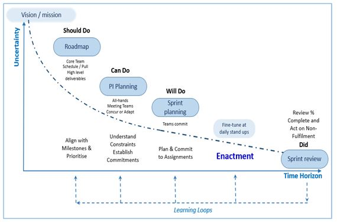
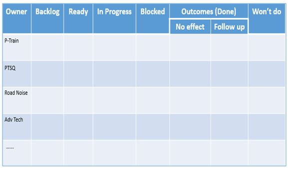

This approach provides increasing granularity as the projects are delivered, but maintains alignment with the strategic direction.
This approach is supported by environments such as Collabnet VersionOne [10]. These IT solutions enable planning at an enterprise, portfolio, team and individual level.
- Vision / mission
- It is essential that all contributors to the project are focused on the overall goal but at this level the solution is not declared and the level of detail is limited, given the high level of uncertainty that exists. This also avoids constraining the innovation as the project progresses.
- Roadmap
- Methodologies such as SAFe[10] or the Last Planner [11] encourage prioritisation at the portfolio level to ensure the focus remains on the most important work as it is essential to match the workload to capacity in order to enable effective delivery. This activity generates a road map that identifies what the delivery teams ‘should do’.
- Increment (PI) planning
- Following the Lean principle of ‘pull’ [12] the teams then identify what they ‘can do’ and maps out any dependencies so that they can be managed. This tends to be done on a quarterly basis and the output informs the sprint planning cycle[13]
- Sprint planning
- This tends to be a biweekly cycle, where the teams plan what they will do at a more detailed level, fine tune the plan daily at stand ups, demonstrate progress and reflect on how to improve.
Prioritised backlog
- Captures items requiring action
Ready column
- Tickets that have been refined to a point that they can be worked on.
In progress
- As team members have capacity they pull the highest priority work into this column.
Note: It is important to ckeck that individuals do not have multiple live tickets. Done
- Completed tickets
For more information on the sprint methodology please visit Introduction to Agile[13].
Managing the flow of work
Sprint or Kanban boards help control the flow of work at the team level board layout is an example of a kanban board.It is formed of a series of columns through which tickets flow as the work progresses from:
The image below shows a board that provided significant benefit for a team that was solving a particularly complex technical issue.

In spite of the board being constructed on the wall and the tickets being ‘post-it' notes.
The clarity provided by making all of the findings and dependencies was highly beneficial in resolving the issue.
References
[9] https://www.projectmanagement.com/wikis/351295/Rolling-Wave-Planning
[10]_https://info.collab.net/v1-trial-free.html?_bt=351365145824&_bk=%2Bcollabnet&_bm=b&_bn=g&_bt=351365145824&_bk=%2Bcollabnet&_bm=b&_bn=g&_bg=70481769243&gclid=CjwKCAiA35rxBRAWEiwADqB37yVjR-PcZh_jMsAudqpz-XatAnbsycuNRfOgwz6Hn2D4RJqbEgG8hBoCeoMQAvD_BwE
[11] https://www.scaledagileframework.com/
[12] BALLARD, H. G. 2000. The last planner system of production control. University
of Birmingham.
[13] Womack, J T. Jones, D T. 2003, Lean Thinking: Banish Waste And Create Wealth In Your Corporation